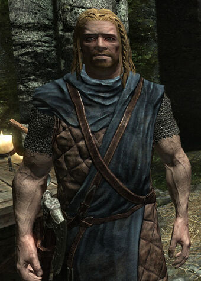

Altos Elfos
Los altos elfos, conocidos originalmente como Altmer, provienen de Summerset y son unos grandes maestros de la magia. Si eliges esta raza empezarás con 150 puntos de magia en lugar de 100, con el poder Aristocrático y las habilidades Curación, Furia y Llamas
Argonianos
Los argonianos son unos seres con aspecto de reptiles que están preparados para enfrentarse a toda clase de venenos debido a que provienen de las ciénagas. Las enfermedades tampoco les afectan y gracias a su característica piel pueden respirar bajo el agua y curarse las heridas durante sesenta segundos. Tiene el poder Piel Regeneradora y las habilidades Curación y Llamas.
Bretones
Los bretones son unos grandes magos y maestros de la alquimia que poseen a su vez una gran resistencia ante dichos ataques y una notable fuerza física. Si eliges esta raza tendrás el Poder Piel de Dragón, con el que recibirás un 50 por ciento menos de daño cuando seas atacado con magia.
Elfos del Bosque
Provinientes de las tierras de Valenwood, los elfos del bosque son una raza ágil y despierta que tienen una capacidad increíble para hacerse con objetos que no son suyos y para esconderse entre las sombras. Su preparación para la infiltración y el sigilo unido a su habilidad con el arco y su resistencia a ls venenos y las enfermedades hacen de esta raza una elección perfecta si te va el rollo de la infiltración.
Elfos Oscuros
Los elfos oscuros dominan las magias más oscuras de Skyrim, principalmente si son hechizos de fuego. Procedientes de Morrowind su conocimiento de la escuela de destrucción no conoce límites, y su afinidad con el elemento fuego hace que sean un cincuenta por ciento más resistente a él que otras razas.
Cuentan con el poder Ira del Antepasado y los hechizos Chispas, Curación y Llamas.
Guardias Rojos
Los guardias rojos son unos guerreros formidables, de los mejores de todo Tamriel, que se reconocen por su tono de piel oscuro característico y que tienen una fuerza física envidiable: su aguante se regenera hasta diez veces más rápido que con cualquier otra raza y tienen más resistencia ante los venenos.
No obstante también son habilidosos con los hechizos, por lo que si no quieres obviar esta faceta pero aun asi no vas a usarla en profundidad, resulta una buena elección. Tienen el poder Subida de Adrenalina y los hechizos Curación y Llamas.
Imperiales
Los imperiales son humanos originarios de la Ciudad Imperial, en Cyrodiil, que tienen una elevada elocuencia y un mayor nivel de conversación, lo que te permite encontrar más oro en los registros. No es que sean unos soldados formidables, pero tienen habilidad para convencer a los demás y afinidad con la infantería.
Cuentan con el poder Voz del Emperador y los hechizos Curación y Llamas.
Khajiita
Los khajiit son una raza con aspecto felino que provienen de la provincia de Elseweyr. Tienen la capacidad de ver en la oscuridad y son muy ágiles e inteligentes que son perfectos parar afrontar une stilo de juego basado en el sigilo y la infiltración.
Tienen el poder Visión Nocturna y los hechizos Curación y Llamas.

Nordicos
Esta raza, al igual que los Imperiales, es humana, pero originaria de Skyrim. Se caracterízan por su valor y su ferocidad en las batallas, por lo que pueden con prácticamente cualquier armadura o arma que le eches. Debido a su origen nórdico tienen una resistencia natural para el frío, recibiendo menos daño ante hechizos de hielo.
Cuentan con el poder Grito de Batalla y los hechizos Curación y Llamas.
Orcos
Los orcos son una raza feroz que pueden alcanzar un estado de furia en el que se les otorga un extra de un cien por cien de ataque un un cincuenta por ciento de defensa. No obstante a cambio de eso se nos limita la visión, como si de un ataque psicopático se tratese, para que nos cueste más acertar al objetivo.
Son originarios de las montañas de Wrothgarian y Dragontail, y tienen el poder Ira Berserker y los hechizos Curación y Llamas.